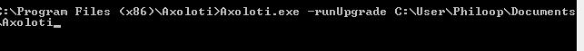
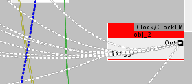

Yep, I did not pull the tags... Will do next time! Thank you.
So the only thing I need to keep with the latest version is: 'git pull --tags' or is this on top of 'git pull'?
Axoloti TEST release 1.0.9
gabriel
#21
DrJustice
#22
Library/demos/synth/stringvoice.axs is not compiling out of the box, as was the case with 1.0.8, but for a different reason.
The sine oscillator at the top/middle position in the patch window , an osc/sine, was red and refused to let itself be replaced. I edited sine/osc.axo and found it had a id of id="osc/sine". Changing it to id="sine" did not help (thinking about possible naming issue). In the end I had to place a new sine object, connecting it and deleting the old one. I.e. there may be something with the replacing of red objects there (as well as the initial inability to compile).
thetechnobear
#23
yeah, I noticed this afternoon that missing objects could not be replaced... I'll add it as a known issue.
I'm confused.... Ive just checked demo/synth/string, and the synth voice is fine, no red objects
(mac osx, 1.0.9)
did you do a 'sync libraries', if you haven't then you wont be looking at the 1.0.9 objects/patches.
(also you should not have changed any factory objects since the sync could fail, as it will complain you have no access to update, and then have changes that are not 'saved')
rbrt
#24
hi there,
in the object editor,parameters section:
choosing 'int_32_box' still turns the object into BOGUS
anon5189335
#25
First of all, I want to say I am VERY happy to finally be able to use the string objects in 1.09. Super great 
A thing that I noticed last night when working with Axoloti is that the patcher/editor can go live, even in card reader mode. But there is no sounds of course and the patch doesnt work.
This might create some confushion and people might start troubleshooting their patches. And they should actually eject Axoloti as a disc.
Anyway, just a heads up for others. This confused me a few times last night
thetechnobear
#26
Yeah i didn't add any parameter types etc
I'll take a look, though it may be this is where Johaness staring hitting some UI limitations
( some need more args that just name type etc)
EDIT: checked, ok, I was correct, this is due to the current UI not allowing max and mins to be set, which the Int32 requires. so basically, the UI for parameters needs to be reconsidered... and/or things like int32 have some defaults.
the later would be a band-aid, as we really need to be able to set this parameters
@johannes, do we apply the band-aid? perhaps default to 0 to 127? ( I know arbitrary, but still  )
)
@johannes, my thoughts on this are 'relatively' simple. I think we need an adjacent panel, such that when you do add, it brings up a panel, which various properties can be set up... the available controls of course would change dependent on the parameter type dropdown.
this also (longer term) would even allow for combo boxes to be setup.
(Id prefer a panel, but a dialog for now could work... as is a little easier to code ... coded right, this could be then 'transferred' to the tab, at a later date)
DrJustice
#27
I'm confused myself... I sync libraries and reload objects all day long (I'm on a roll).
I did a little more testing today. I deleted axoloti-factory/demos/synth, did a sync, and it now compiles so that's fine and probably working for others. I also made the following observations:
- If I delete a factory patch, a sync will get it back
- If I delete a factory or community object [1] a sync will not get it back
- If I change a factory object [1], there are no complaints on a sync
I've done several syncs here, and the above is repeatable.
[1] I know, I know... we're not supposed to, but to get my failing systems running, I'll happily break all the rules and push the red button in the process of experimentation, and it may uncover issues...
alexk
#28
ayy, im pretty nervous to upgrade with so many unfinished synths on my side hehe. Kind of staying ignorant on purpose now so I dont see some sort of improvement that I need
Will do an install on a separate pc and test with a spare axo. I can always downgrade the firmware and etc as far as I remember (been a while, sorry).
thetechnobear
#29
understandable, though if your on 1.0.8... Id say its almost certainly an improvement.
I will point out for 'advanced users' it is actually possible to run two different versions of axoloti on one machine.
all you need to do is have two different home directories (e.g. Documents/axoloti_108 and Documents/axoloti_109), and then when you run axoloti ensure the axoloti_home environment variable points to the correct one!
(obviously you have to then be careful with patch versions etc, but for testing it works well)
I do mean to add a feature, which makes this a bit easier in the future, so that testers can easily switch between the two versions. whilst patches/objects wont still be guaranteed to be compatible, it will allow you to work with an older version, and then test a new version with your objects/patches etc, allowing you to decide if switching is 'safe'
thetechnobear
#30
Thanks @DrJustice, its great to have someone testing this stuff , I really appreciate it
ok, for me this didnt work... i.e. (and expected) it remained deleted
yes, this is what I got, and is as expected
(assuming the community object is not in your prefix)
this is true, as its not really an error
BUT.. if you look closely when you first startup up, when I report the status, you will see it says that factory is dirty, and lists the modifications.
anyway way, I think its probably 'not right', so Ive made two small changes
1) now, when you sync, it reports if modifications are made to any repo including factory.
2_ if you are not authorised to change the repo (e.g. factory) then it will report 'unauthorised changes, resetting' and will reset the branch back to the head... i.e. undoing your changes.
now, Ive not applied this a library you are authorised for (e.g. community), so it wont reset changes outside your prefix. mainly because Im a little concerned, that if something 'goes wrong, I could accidentally remove users changes/files.
Im not 100% that even doing this on unauthorised libraries is 100% safe, as its possible if users forget to add the authorisation details for the community library, but have already started editing there, then these will be overwritten.
.... Im still in two minds, I may make it so this 'resetting' has to be done via the preferences panel, though arguably to the user this is then pretty much identical to just using init().
thoughts?
another small note: as of 1.0.9, you can't actually change the factory objects via the UI anymore, as the object editor protects it, so you would have to have gone outside to get into this state.
DrJustice
#31
Well, with the hands off policy on factory objects and patches, I think that a sync should refresh and repopulate the library and any changes locally should not remain marked as uncommitted since commits are disallowed. I.e. treat the factory library as a black box, go hard line and ignore all end-user activity there and always keep it up to date on a sync.
On a sync I currently get the report below. I can of course repair it all by getting missing things from github, but it would not resolve the confused state of things.
Link to firmware CRC 21C46C25
Status: factory (1.0.9,anon) : OK ( 1.0.9,dirty )
Changes for: factory (1.0.9,anon)
missing: patches/demos/synth/organvoice.axs
modified: objects/osc/sine.axo
uncommited: objects/osc/sine.axo
uncommited: patches/demos/synth/organvoice.axs
Status : home : OK
Status: community (master,Gassolini) : OK ( master,dirty )
Changes for: community (master,Gassolini)
missing: objects/toneburst/osc/sinesync.axo
uncommited: objects/toneburst/osc/sinesync.axo
And yes, this is the result of me being a bit unruly, which again is a result of a (IMO) slightly confusing/incomplete repository policy implementation. I'm going to reinstall Axoloti afresh now, and see if that resolves things.
Edit: I'm back. Dropped the reinstall, and instead just deleted my .../Documents/axoloti directory. When starting the software it repopulated everything, the local vs repo status is clean and it all works fine 
Edit 2: Just to be sure, to balance out my 'problem' experiences (some of which I'm to blame for!), I want to add that Axoloti is pure addictive fun, and the whole system is lean & mean and easily worked, the way I like it. I'm a happy Axolotian, and my hat is off to Johannes for creating this!
thetechnobear
#32
Ive no issue with 'unruly' this is really what test releases are about... whilst we are probably up to 'destructive testing' yet with axoloti... I do think you have to push these things a bit... once released, users will do these kind of things 'by accident'
I'll say my original intention, actually was, if the user modified the factory, fine... on their own head be it,
but the above messages would notify that its been done.
and the way back from this is to init() the factory repo.
sure the checkout is more 'optimal', as you dont need a full delete/clone but arguably the init() is more 'belt n braces'
unless, I heard screams... I'll check in the new 'reset' code
gabriel
#34
That file (Axologi.sh) exists in your /axoloti folder, wherever it was installed.
In linux "./" means "run from here", i.e. from the folder you typing. But I do not know which OS you are using.
thetechnobear
#35
for application released images (rather than dev, which I was referring to)
on mac it will be , from terminal
/Applications/Axoloti.app/Contents/MacOS/Axoloti -runUpgrade [your directory]on linux , from command line/terminal
/opt/Axoloti/Axoloti -runUpgrade [your directory]on windows , from the command prompt, something like
"\Program Files (x86)\Axoloti\Axoloti.exe" -runUpgrade [your directory]but because windows is dreadful with command line syntax, it doesn't appear to like/handle the - , it works if you have a proper interpreter install on windows (e.g. cygwin) , but I've not idea what the magic escaping is that works otherwise. (sorry, as you can possible tell i dont like windows ... life is just too short )
philoop
#36
in the newer versions of Windows,to open the commandline in a folder ...
Simply hold down the Shift key and right-click a folder.
The context menu will contain an entry, ‘Open command window here.
”
this produced no error, but also nothing happend,
shouldnt i see some processing in the commandline?
that is really bad.......
thetechnobear
#37
yes, in fact if you use -help it should give you a list of command line arguments, but for some reasons windows is not sending them through.
as i say, if you run cygwin on windows, then running exactly the same Axoloti.exe, will correctly send the args through and works... given the exe works, it something to do with the command line interpreter, but I've not idea what. sorry.
missing objects, this only happens if you are missing objects on your path... replace still works, its just replacing so called 'zombie objects' , thats failing. given that in normal circumstances, there should be no zombie objects in a patch, I find it hard to believe its "really bad" for most users.
philoop
#38
ja thank you, i will try cygwin....
Some objects in my patches still referering to Virtual store, and i found out the only way replacing them is deleting them,
wich is a little bit not so good....
The new add to libraries is working fine!!thank you !!!
I d wish there would be an button to update the xml inside the object editor.....
thetechnobear
#39
ok, Ive fixed the replacing of zombie objects (for 1.0.10 , or whatever its called )
anon5189335
#40
I am also having issues with replacing a red object. The subpatch on the picture is not found. When I try to replace them with the right ones(to get the original settings of the object), nothing happens.
@DrJustice Did you find a work around for this?

Thanks